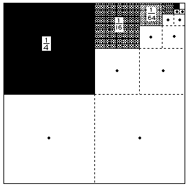

 She put dots in the squares
that could never have any part filled and then noticed that the ratio of shaded
to not-shaded was 1:2. Since the sum of 1 and 2 is 3, she conclude that the
series converges to 1/3. How about that! Do you think her method works for 1/3 +
1/9 + 1/27 + ... ? or 2/3 + (2/3)^2 + (2/3)^3 + ... ?
Jonathan, at age 7 and in Don's videotape #2, by using the patterns he
found, generalizes the sum of the infinite series  = A/(B-A). So simple!
= A/(B-A). So simple!